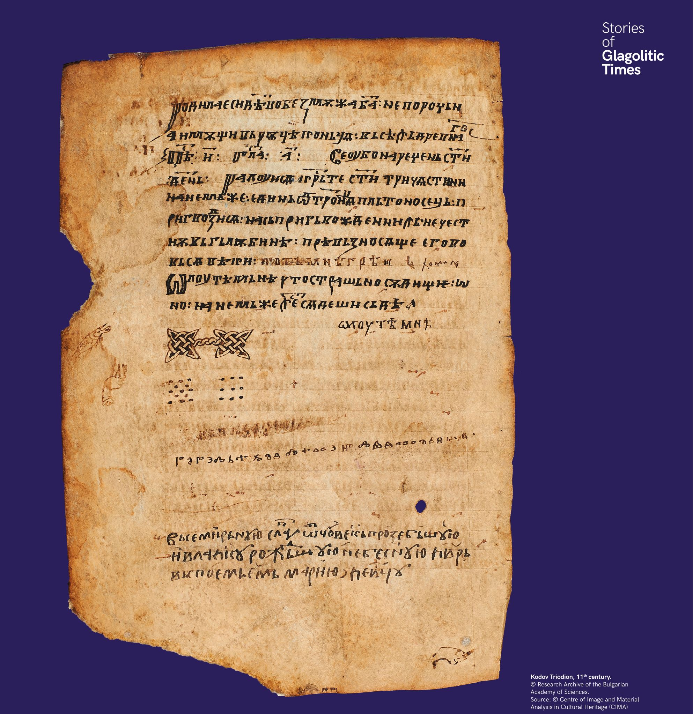

Titkos üzenetek
A 11. századi Kodov-triódion jegyzete szerint: „Dragoszlav atya, hibázni fogsz”. A glagolitát olykor titkos üzenetek közvetítésére is használták.


A 11. századi Kodov-triódion jegyzete szerint: „Dragoszlav atya, hibázni fogsz”. A glagolitát olykor titkos üzenetek közvetítésére is használták.
В Кодовия триод от XI век стои бележка: „Отче Драгославе, ще сгрешиш“. Глаголицата понякога служи и за тайни послания.